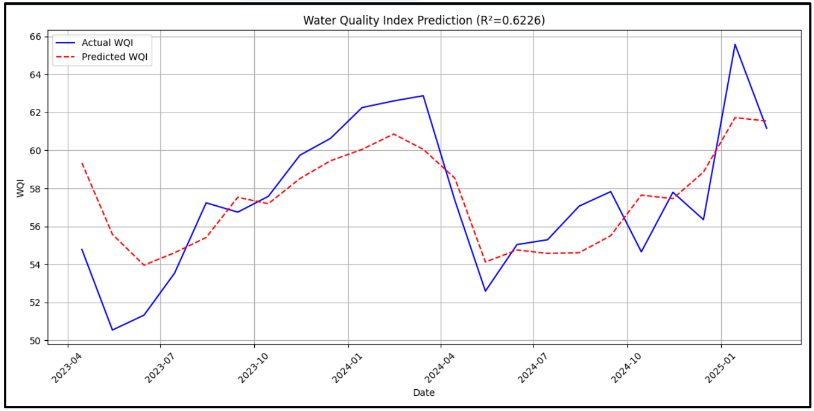

Model Information
This dashboard uses a Hybrid CNN-LSTM model trained on historical water quality data to forecast the Water Quality Index (WQI).
- 🧠 Model type: CNN-LSTM hybrid
- 🕰️ Lookback window: 24 months
- 📈 Trained on: water_quality_data.csv
- 💧 Water Parameters: Temperature (°C), pH Level, Ammonia (mg/L), Nitrate (mg/L), Phosphate (mg/L), Dissolved Oxygen (mg/L)
- ☁️ Climatological Parameters (Seasonal Patterns): Wind Direction, Wind Speed, Max/Min Temperature (°C), and Rainfall
- 🌋 Volcanic Parameters: CO2 Flux (t/d) and SO2 Flux (t/d)
Model Performance Metrics
| Metric |
Value |
| RMSE |
2.31 |
| R² |
0.62 |
| MAE |
1.91 |
Model Output Graph
